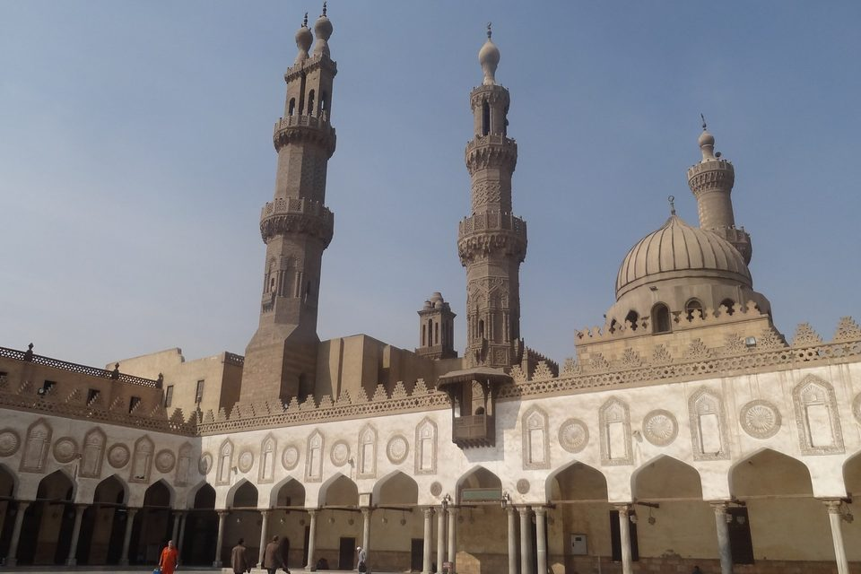

Egypt · Cairo
Al-Azhar Mosque & University audio guide
8 stops · 12 min
Billed in ZAR
Unlocks in this browser after payment.
The first mosque of Fatimid Cairo, and its school since 988. Listen here, or get the Earwise app to play as you walk.
Stops
- 1
The Gate of the Barbers
On the pavement outside the main entrance, facing the doors of the Bab al-Muzayyinin. This is stop 1 on the route.
Play0:00 / –:––Read along
The double doorway in front of you is the main way in. Its name, Bab al-Muzayyinin, means the Gate of the Barbers.
This gate is young by the standards of the building behind it. It belongs to the works of Abd al-Rahman Katkhuda, a Mamluk grandee of Ottoman Egypt. Sources date his works to 1753 or 1754. Much later, in 1982 and 1983, restorers brought back the gate's original colours.
Al-Azhar itself is much older. In 969, the Fatimid dynasty took Egypt. Their general, Jawhar al-Siqilli, founded a new city north of old Fustat. That city was al-Qahira, Cairo. Its mosque was this one, the first the Fatimids built there.
Building began on 4 April 970. It took about two years. The mosque was opened in Ramadan, on 22 June 972. The first Friday sermon was preached from its pulpit that year.
Where does the name come from? Al-Azhar means "the splendid" or "the radiant". One explanation links it to Fatima al-Zahra, the daughter of the Prophet Muhammad. But no early document confirms that. The historian al-Maqrizi tells us something else. The two Fatimid palaces nearby were known together as the Splendid Palaces.
The first mosque was modest. It measured about seventy by eighty-five metres. Over the centuries, sultans, amirs and governors kept adding to it. Its footprint grew to about one hundred and twenty by one hundred and thirty metres. That is more than double. So what you are about to walk through is not one building. It is a thousand years of buildings, joined together.
- 2
The courtyard and the Fatimid arcades
In the open courtyard, standing on the marble paving, with the arcades around you. This is stop 2 on the route.
Script and audio included when you buy - 3
The prayer hall and the first mihrab
Inside the original prayer hall, on the south-east side of the courtyard. This is stop 3 on the route.
Script and audio included when you buy - 4
Katkhuda's prayer hall and the years of protest
In the eighteenth-century prayer hall, the Ottoman addition beyond the original Fatimid hall. It is an active place of worship, so dress modestly and keep your voice low. This is stop 4 on the route.
Script and audio included when you buy - 5
The Aqbughawiyya Madrasa
In front of the Aqbughawiyya Madrasa, at the north end of the courtyard, beside its entrance. This is stop 5 on the route.
Script and audio included when you buy - 6
The Taybarsiyya Madrasa and its mihrab
At the south-west end of the courtyard, at the entrance of the Taybarsiyya Madrasa. This is stop 6 on the route.
Script and audio included when you buy - 7
The Jawhariyya Madrasa
At the north-east end of the complex, in front of the Jawhariyya Madrasa. This is stop 7 on the route.
Script and audio included when you buy - 8
The minarets and the university
On the courtyard edge, below the gate of Qaytbay and its minaret. This is stop 8 on the route.
Script and audio included when you buy
On the map
All 8 stop pins for this guide are marked. Open map